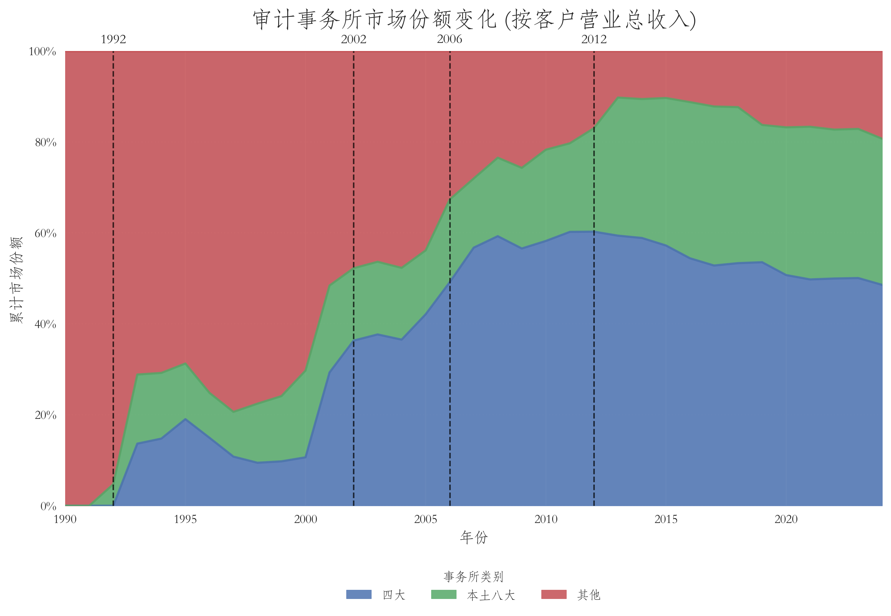
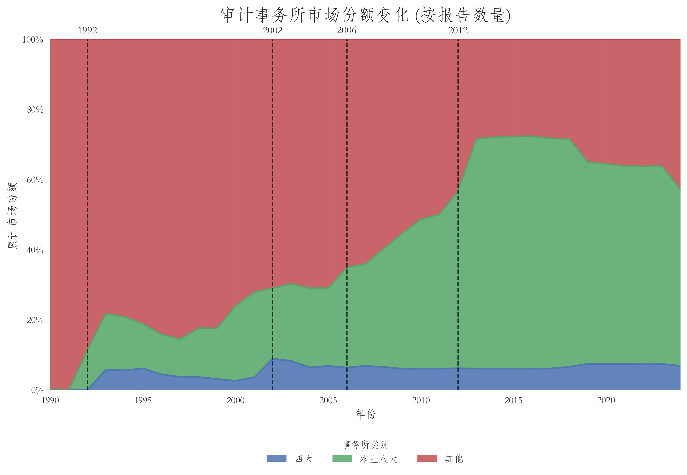

背景
1. 中国注册会计师行业与上市公司审计市场的发展
1.1 注册会计师制度的恢复与法律体系建立
1980年，经国务院批准，财政部恢复重建注册会计师制度。1986年国务院颁布《注册会计师条例》；1988年中国注册会计师协会成立；1993年《中华人民共和国注册会计师法》颁布，并于1994年实施。由此，中国注册会计师行业从行政恢复阶段逐步进入以专门立法、行业自律和专业准则共同支撑的制度体系。
对本文而言，这一历史背景意味着：中国现代独立审计行业、证券市场和国际会计师事务所在华扩张基本是在相邻年代形成的。1990年代前后不仅客户需求在变，审计供给侧的法律组织、资格制度和市场结构本身也在迅速演化。
核验来源：中国注册会计师协会：《牢记行业使命 服务国家建设——庆祝中华人民共和国成立70周年注册会计师行业工作与发展成就掠影》，2019-09-30，https://www.cicpa.org.cn/xxfb/news/201909/t20190930_5207.html
1.2 1998–1999年会计师事务所脱钩改制
早期中国会计师事务所大量挂靠于党政机关、社会团体、科研院所和企事业单位，并不完全是现代意义上的独立专业服务机构。1998年初，注册会计师行业启动全面脱钩改制，要求事务所与挂靠单位在人事、财务、业务、名称四方面彻底脱钩，改制成为以注册会计师为主体发起、自主经营、自担风险的执业机构。
中注协历史资料显示，截至1999年底全国事务所脱钩改制全部完成；在清理整顿和改制过程中，全国事务所数量从最多6900多家降至4805家。脱钩改制也改变了事务所依靠行政挂靠获取业务的组织基础，为此后市场化竞争、合并整合以及大型本土事务所形成提供了制度前提。
对研究的含义 若研究2000年前后的 audit-firm choice，应意识到1998–1999并非普通年份。事务所“品牌”“客户关系”和“firm FE”在改制前后的经济含义可能不同。
核验来源：中国注册会计师协会：第四次会员代表大会历史回顾，https://www.cicpa.org.cn/ztzl1/dbdh/4dai/200901/t20090115_32100.html
1.3 上市公司审计的证券业务资格制度
2000年前后，财政部与证监会建立并完善注册会计师执行证券、期货相关业务的许可证制度。证监会现行规范性文件历史目录明确列示：1999年已有“不得限制中介机构跨地区执行证券相关业务”的监管要求；2000年发布《注册会计师执行证券、期货相关业务许可证管理规定》，2003年发布补充规定，2007年又对事务所从事证券、期货相关业务作进一步规范。
因此，本文若研究事务所选择或客户换所，理论上的 choice set 应优先理解为“当年具备证券审计资格并实际可承接该客户的事务所集合”，而不是全部工商登记会计师事务所。资格制度还意味着事务所被吊销、暂停或丧失相关资格时发生的客户流失，与普通自愿换所不同。
核验来源：中国证监会宁夏监管局：现行规章、规范性文件目录（证券服务机构类），https://www.csrc.gov.cn/ningxia/c105511/c1307601/content.shtml
1.4 2020年：从证券业务资格审批转向备案管理
财政部与证监会发布《会计师事务所从事证券服务业务备案管理办法》，自2020年8月24日起施行。制度从原有证券服务资格审批转向备案管理。备案本身不代表监管机构对事务所执业能力或质量的认可，而是从事证券服务业务的监管入口。
因此，若样本覆盖2020年以后，观察到的小型事务所进入、客户换所概率或市场集中度变化，需要与这一准入制度变化区分。尤其不能把2020年前后所有进入变化都归因于疫情、处罚或客户需求。
核验来源：财政部、证监会：《会计师事务所从事证券服务业务备案管理办法》，财会〔2020〕11号，https://ah.mof.gov.cn/zhengcefagui/202012/t20201230_3638074.htm
1.5 中国上市公司审计市场的研究分类
本文目前使用 Big 4、Local 8、Other 对上市公司审计事务所进行分层。Big 4 可以按国际网络及其中国法律实体做历史名称映射；Local 8 则不是监管部门的法定类别，而是行业与文献中的经验性分类。
【研究口径】 Local 8 不应被当成跨年份完全不变的法律类别。事务所合并、品牌变更、国际网络加盟和中注协综合评价排名都会改变“本土八大”的边界。目前确认的本土八大是是中国最具规模的八家会计师事务，具有 A + H 股审计资格。分别为：瑞华、立信、天健、信永中和、大华、大信、致同和天职国际。
核验来源：中国注册会计师协会：2007年度会计师事务所综合评价前百家信息，https://www.cicpa.org.cn/ztzl1/swszhpm/zonghe/202104/t20210420_57384.html
2. 国际大型会计师事务所进入中国的历史
2.1 1980年代：代表处与早期进入
跨国企业进入中国后，需要国际会计、税务、咨询和审计服务，推动当时的国际大型专业服务网络在北京、上海等城市建立早期驻华机构。需要注意，代表处、办事处、中外合作所和具有中国法定审计资格的事务所是不同制度层级。代表处的存在并不等于已经能够以该境外实体直接签发中国法定上市公司审计报告。KPMG China 官方历史明确说，1983年在中国内地设立第一个办事处，随后1992年获得中外合资企业证书。德勤给出的时间线则更细：上海 1981、北京 1984、广州 1985 建立办事处；到 1993年才设立 Deloitte Touche Tohmatsu Shanghai Certified Public Accountants，即其上海中外合作审计实体。安永方面，北京市政府资料称，EY 1981年即成为最早获准在中国内地运营的国际专业服务机构之一。
如果未来利用“Big4 entry year”做地区供给冲击，应建立四个不同日期：最早代表存在、首个中国登记办公室、首个中外合作事务所、首个具备证券审计资格的中国法律实体。不要把这些事件压缩成一个日期。
2.2 1992年：中外合作会计师事务所制度
【已核实】 术语应统一为“中外合作会计师事务所”。
| 中国审计实体 | 设立时间 |
|---|---|
| 毕马威华振 | 1992年7月 |
| 安永华明 | 1992年7月 |
| 普华永道中天的前身体系 | 1992年12月 |
| 德勤华永 | 1992年12月 |
财政部在2012年回顾四大本土化时明确指出，为适应改革开放和资本市场发展需要，1992年中国开始批准外国会计师事务所与中国会计师事务所依据当时法律设立中外合作会计师事务所。当时国际“六大”——安永、德勤、毕马威、普华、永道和安达信——成为第一批准入者。
这一节点比2001年WTO更接近“国际大型事务所正式进入中国法定专业服务市场”的制度起点。因此本文不能写成“WTO之后四大才进入中国”；更准确的区分是：1992是正式进入和本地法律实体建立，2001以后可能是国际化需求与市场扩张的进一步变化。
核验来源：财政部会计司：《中外合作会计师事务所本土化转制方案》答记者问，https://kjs.mof.gov.cn/zhengcejiedu/201205/t20120509_649844.htm
2.3 1998年前后国际网络合并与历史名称处理
今天的四大并非在整个样本期始终以相同全球网络和中国名称存在。例如，普华与永道在1998年全球合并形成普华永道。
2.4 2001–2002年：中国高端审计市场快速重组
2001–2002同时发生多项相互叠加的变化：中国加入WTO；大型企业境外融资与国际化程度上升；A股补充审计制度开始试点；安达信全球网络因Enron事件迅速瓦解；安达信中国大陆和香港的业务团队发生重组并大量并入PwC体系。
识别提醒 这些事件发生时间接近，因此“2001/2002之后四大市场份额上升”本身不能识别WTO的单一因果作用。WTO、跨境上市需求、补充审计规则以及安达信重组都可能共同影响。
2.5 安达信退出与“四大”格局形成
Arthur Andersen在Enron事件及后续法律与声誉危机中迅速瓦解。2002年前后其中国大陆与香港团队和业务发生大规模重组，全球大型审计网络由此前“五大”逐步形成今天通常所称的“四大”格局。
数据编码 Andersen → PwC 或其他后继实体的客户变化应额外标记为 network reorganization / merger-related switch，不宜与普通客户自愿换所等同。



2.6 2012–2013年：四大本土化与特殊普通合伙转制
2012年，财政部、工商总局、商务部、外汇局和证监会联合发布《中外合作会计师事务所本土化转制方案》。方案所称四家中外合作所为安永华明、毕马威华振、德勤华永和普华永道中天，并要求其在中国法律框架下完成本土化和组织形式转换。财政部后续总结显示，四家事务所于2012年7月至2013年3月相继转为特殊普通合伙。
财政部还披露，2012年时四家合作所共有25家分所，主要集中于北京、上海、广州、深圳、大连、苏州等经济发达城市。转制方案设置合伙人人数、中国CPA人数、资本及本土化比例等要求，并设置过渡期安排。
组织形式转轨：必须由原先的“中外合作经营企业”（享受外资及有限责任保护）全部转制为中国《合伙企业法》规定的特殊普通合伙制（Special General Partnership, SGP）。
首席合伙人资格：执行事务合伙人/首席合伙人必须具备中国国籍且持有中国注册会计师执业资格（CICPA）（非达标者最多留任 3 年过渡期）。
合伙人资质比例硬约束：具备其他国家/地区资格的境外合伙人（港澳台及外籍），在合伙人总数以及管理委员会中的比例，转制初不得超过 40%，2017 年底前必须降至 20% 以下（即本土 CICPA 合伙人必须占到 80% 以上）。
法律责任与风险准备：必须建立职业风险基金并购买职业责任保险，合伙人面临全新的无限连带责任追偿机制。
对现有研究的关键修正 转制后工商登记“新增合伙人”不等于新招聘或新进入四大的审计师。相当一部分变化可能是原中外合作所内部既有人员在新法律实体中首次以自然人合伙人身份显名。因此2012转制不能直接当作外生human-capital inflow。
核验来源：财政部等：《中外合作会计师事务所本土化转制方案》，财会〔2012〕8号，https://kjs.mof.gov.cn/zhengcefabu/201205/t20120509_649853.htm；财政部会计司：《中外合作会计师事务所本土化转制进展顺利》，2013-05-22，https://m.mof.gov.cn/czxw/201305/t20130521_880540.htm
2.7 国际网络、中国法律实体与分所
研究中至少要区分四个层级：国际网络（例如PwC network）、中国法律实体（例如普华永道中天）、具体分所/office，以及个人合伙人或签字CPA。客户聘任的法定审计机构通常是中国法律实体；国际网络提供品牌、方法、技术和跨境资源；分所可能拥有地方客户关系和人员市场；具体审计又由项目合伙人和项目组完成。
International Network ≠ Chinese Legal Entity ≠ Office ≠ Individual Partner
这也是后续区分 organizational capital、office-level capital 与 portable individual human capital 的制度基础。
3. WTO、服务业开放与会计审计行业
3.1 中国加入WTO
中国于2001年12月11日正式成为WTO成员。WTO对本项目至少可能通过两个不同渠道发挥作用。第一是客户需求侧：贸易、外资、海外融资和跨国经营增加，可能提高企业对国际化审计服务和可被海外资本市场认可的信息中介的需求。第二是专业服务供给侧：中国在GATS框架下对会计、审计和簿记服务作出市场准入和国民待遇承诺。
核验来源：WTO: China and the WTO, https://www.wto.org/english/thewto_e/countries_e/china_e.htm
3.2 CPC 862：会计、审计和簿记服务
CPC 862是研究中国入世时专业会计服务承诺的正确分类。GATS通过四种服务提供模式规定跨境服务、境外消费、商业存在和自然人流动的市场准入与国民待遇。对事务所在华设立实体和经营最相关的是Mode 3（Commercial Presence），但中国CPA资格、国内法律实体以及国内监管许可仍然存在。
市场准入限制： 合伙或有限责任会计师事务所只限于中国主管机关批准的注册会计师（CPAs）。（附注：允许外国会计师事务所与中国会计师事务所结合成联营组织）
国民待遇限制： 没有限制。也就是说，外资所一旦获批设立，在国民待遇上不能歧视外资所。
核验来源：WTO: Accountancy services, https://www.wto.org/english/tratop_e/serv_e/accountancy_e/accountancy_e.htm
3.3 四种服务提供模式与研究含义
· Mode 1 — Cross-border supply：服务跨境提供，不要求服务商在客户所在国设立商业实体。
· Mode 2 — Consumption abroad：客户在境外消费相关服务。
· Mode 3 — Commercial presence：外国服务提供者通过本地商业存在提供服务。对会计事务所在华组织形式最相关。
· Mode 4 — Presence of natural persons：专业人员以自然人身份跨境提供服务。
即使服务市场开放，境外CPA网络也不等于可以直接以境外法人无限制签发中国上市公司法定审计报告。中国注册会计师资格、事务所法律实体和证券审计监管仍构成独立制度层。
3.4 WTO在本文中的推荐表述
目前最安全也最准确的表述是：WTO加入是中国经济全球化和服务业开放的重要制度节点，可能同时通过企业国际化需求和专业服务市场开放提高国际大型会计师事务所的市场机会。但国际“六大”早在1992年已通过中外合作事务所正式进入中国，因此WTO不是“四大首次进入中国”的事件。
1992: formal local entry | 2001: globalization / possible expansion and demand shock
4. 跨境融资、海外上市与国际审计需求
4.1 B股与历史上的双重审计需求
B股作为境内上市外资股，在中国资本市场早期承担吸引境外投资者的功能。历史上B股公司存在境内外双重审计安排，即同一发行人同时接受境内与境外/国际审计体系要求。2007年随着会计与审计准则国际趋同推进，相关双重审计要求被取消。
对研究的含义 B-share dummy 在2007年前后代表的institutional demand不同。若研究 B-share listing → Big4 adoption，至少要允许pre/post 2007存在异质性。
核验来源：中国证监会/财政部：关于H股审计试点答记者问，对2007年取消金融类、大规模A股和B股双重审计政策的官方回顾，https://www.csrc.gov.cn/csrc/c100028/c1002686/content.shtml
4.2 2001–2007年A股补充审计制度
2001年12月30日，证监会发布A股公司补充审计暂行规定；2002年2月进一步明确试点范围。2002年试点包括一次发行量超过3亿（含3亿）股的公司，以及监管部门另有要求的公司。执行补充审计的事务所需要获得证监会和财政部特别许可并具备证券期货相关业务资格。
这一制度意味着部分大型A股公司不仅面对一般法定审计需求，还被要求接受额外审计程序。对本文的Stage 1而言，它提供了比“WTO宏观开放”更直接的监管机制：大型资本市场交易本身可能创造额外的高端审计需求。
核验来源：中国证监会：《关于2002年A股公司进行补充审计试点有关问题的通知》，证监发〔2002〕10号，https://www.csrc.gov.cn/csrc/c100024/c1492352/1492352/files/cc44b0a2a5344108a2955e825a23f1e8.pdf
4.3 2007年特殊审计要求取消
证监会在2007年3月取消对金融类上市公司及一次发行量超过3亿股公司的相关特殊审计要求，并在同年9月取消B股公司的双重审计安排。官方解释将这一变化与2006年新企业会计准则和审计准则实施、与国际准则实质性趋同联系起来。
数据中发现2007年后境外审计师、双重审计骤降。

核验来源：中国证监会/财政部答记者问，https://www.csrc.gov.cn/csrc/c100028/c1002686/content.shtml
4.4 H股与A+H公司的双重财务报告和审计
长期以来，境内企业赴香港上市，特别是同时具有A股和H股的企业，需要同时满足内地与香港资本市场监管要求。官方回顾指出，过去A+H公司通常需要按内地会计准则与香港财务报告准则/IFRS分别编制财报，并由符合两地要求的事务所按照相应审计准则进行审计。
与出口或一般国际业务相比，H股/A+H上市对国际审计服务的需求机制更加直接：它通过上市规则、跨市场财务报告和监管认可产生制度化的信息认证需求。
核验来源：中国证监会、财政部：内地大型会计师事务所获准从事H股企业审计业务答记者问，https://www.csrc.gov.cn/csrc/c100028/c1002614/content.shtml
4.5 2007年内地与香港会计审计准则等效
2007年12月6日，内地与香港签署会计审计准则等效联合声明。其制度意义在于：随着会计与审计准则趋同，过去必须重复编制和重复审计的必要性下降，为后续允许符合条件的内地事务所直接承接H股审计创造条件。
Standards convergence → lower duplication → broader feasible auditor set for H-share issuers
4.6 2010年：内地大型事务所获准承接H股审计
2010年12月首批12家内地大型事务所获准从事H股企业审计业务。首批获准事务所既包括四大中国实体，也包括瑞华、立信、天健、信永中和、大华、大信、致同和天职国际（也就是我们定义的八大）等大型本土事务所。这意味着“只要是H股就法律上必须使用境外四大”在完整样本期内并不成立。
研究含义 H-share listing 对 Big4 adoption 的效应应允许2010年前后发生变化。2010年之前实际上境外审计只能由境外事务所（不包括中国的四大实体）承办；2010年之后，H股审计的可选集合扩展，四大和八大都可以作为境外审计事务所。
核验来源：中国证监会、财政部：内地大型会计师事务所获准从事H股企业审计业务答记者问，https://www.csrc.gov.cn/csrc/c100028/c1002614/content.shtml
4.7 A+H的定义与同步上市
工商银行不是历史上第一家“同时拥有A股和H股”的公司，更准确的说法是其2006年成为首家A股和H股同步发行、同步上市的大型公司。因此A+H的研究定义不应从2006年开始。对于先H后A、先A后H、同步发行等不同路径，最好分别保存日期。比如，招商银行A股于2002年4月9日在上交所上市，H股于2006年9月22日在港交所上市，是“先A后H”。中国平安H股于2004年6月24日在香港上市，A股于2007年3月1日在上交所上市，是“先H后A”。 港股年报数据库从2007年起覆盖。
5. 中国本土会计师事务所的发展、整合与组织形式改革
5.1 脱钩改制后的本土事务所
1998–1999脱钩改制后，本土事务所逐渐转为独立经营、自担风险的专业服务机构。此后行业改革核心逐步从“摆脱行政挂靠”转向“规模化、专业化、治理一体化和国际化”。
5.2 2007年“做大做强”战略
中注协2007年5月正式启动行业“做大做强”战略，提出用5至10年培育100家左右具有一定规模、能为大型企业和企业集团提供综合服务的事务所，并在此基础上培育10家左右能够服务中国企业“走出去”、提供跨国经营综合服务的国际化事务所。
该战略为之后本土事务所合并、跨地区扩张、国际网络加盟和内部治理一体化提供了政策背景，但是否导致某次具体合并仍需逐案验证。
核验来源：中国注册会计师协会：《注册会计师行业实施做大做强战略》，2007-05-28，https://www.cicpa.org.cn/ztzl1/swsnbzl/ldjh/200806/t20080616_39327.html
5.3 事务所合并与规模化发展：数据上必须区分事件类型
事务所名称变化并不总等于真实经济组织合并。建议对事务所历史事件至少区分：法律实体合并、品牌/国际网络加盟、团队整体迁移、分所重组、简单更名。
Observed firm-name change ≠ necessarily client voluntary switching
这一点直接影响客户—事务所关系中断率、auditor mobility、AKM connected set和Big4 alumni识别。
5.4 2010年大中型事务所特殊普通合伙改革
财政部与工商总局2010年发布《关于推动大中型会计师事务所采用特殊普通合伙组织形式的暂行规定》。大型事务所指行业领先、能够为企业“走出去”提供国际化综合服务、行业排名前10位左右的事务所；中型事务所大致指行业排名前200位左右（不含大型所）。大型事务所应在2010年底前转制；中型事务所被鼓励在2011年底前转制。
特殊普通合伙的责任结构明确：因一个或数个合伙人在执业活动中故意或重大过失造成债务的，责任合伙人承担无限责任或无限连带责任，其他合伙人以其在合伙企业中的财产份额为限；其他普通债务的责任安排不同。
研究含义 SGP改革可能改变合伙人个人责任、内部监督激励和治理，但不是所有事务所同一天发生的统一event。要用它做识别必须使用各事务所真实转制日期。
核验来源：财政部、工商总局：财会〔2010〕12号，https://sx.mof.gov.cn/bszn/zhengcefagui/201007/t20100726_329607.htm
5.6 与2012年四大本土化转制的区别
2010年特殊普通合伙改革是面向大中型中国会计师事务所的组织形式改革；2012年四大本土化则是原中外合作四大到期/提前转制的专项制度安排。两者政策对象、动因和具体条件不同，不能在实证中合并成一个统一“合伙制改革”处理。
6. 上市公司审计业务的组织结构
6.1 客户法律上聘任会计师事务所，审计由具体项目组生产
上市公司法定审计的聘任主体首先是会计师事务所，而非某一个自然人CPA。但具体审计工作由事务所内部项目组完成，并由项目合伙人、签字CPA、项目质量复核人员等承担不同责任。
Audit output = organizational platform + engagement-team human capital + client characteristics
6.2 两名注册会计师签字制度
对合伙事务所，一名应为对审计项目负最终复核责任的合伙人，另一名为负责该项目的注册会计师；对当时的有限责任事务所，则由主任会计师或其授权副主任会计师与一名负责项目的注册会计师签字。接下来的研究默认第一签字人为review/lead partner、第二签字人为engagement partner。
核验来源：中国注册会计师协会转载财政部：《关于注册会计师在审计报告上签名盖章有关问题的通知》，2004-06-09，https://www.cicpa.org.cn/ztzl1/Professional_standards/otherfiles/201211/t20121104_60881.html
6.3 总所、分所与国际网络
总所、分所和国际网络在客户获取、人员配置、质量控制和品牌资本上可能承担不同作用。若未来使用office FE、firm FE和network FE，应明确它们分别吸收何种组织层面差异。
7. 注册会计师执业资格、年检与职业流动
7.1 注册与执业资格
通过CPA考试并不自动等于成为可签署法定审计报告的执业注册会计师。研究中应区分考试通过者、非执业会员和执业注册会计师。签字审计数据对应的主体应是满足执业资格并在事务所执业的CPA。
7.2 CPA与事务所的执业关系
执业CPA通常依托某一家事务所执业，因此个人职业流动可以用Auditor × Firm × Year关系刻画。但工商登记、注协注册关系、年检名单和审计报告实际签字的日期口径可能不完全一致，构造职业史时不能机械认为四套数据同日变化。
7.3 年度任职资格检查
中注协2008年《注册会计师任职资格检查办法》明确按年度检查CPA任职资格，由省级协会负责本地区检查。地方注协公布的年检名单适合识别某CPA在某年度的执业资格及事务所归属，但不等于该CPA当年一定签署过上市公司审计报告。因此年检数据是职业关系/供给池数据，而审计报告签字才是具体engagement assignment。
核验来源：中国注册会计师协会：《注册会计师任职资格检查办法》，https://www.cicpa.org.cn/ztzl1/Registration/zhidu/200804/t20080428_61010.html
7.4 转所与职业流动
个人层面的真实转所，应与事务所合并、分所重组和品牌更名区分。
7.5 注销、非执业与重新注册
CPA从年检名单或签字样本中消失并不必然表示永久退出行业。可能原因包括注销执业、转为非执业、转所登记滞后、暂停执业、退休或之后重新注册。因此职业史不宜把“第一次消失”自动设置为absorbing exit。
8. 签字注册会计师与关键审计合伙人轮换制度
8.1 2003年规则及2004年实施
【已核实；核心识别背景】 证监会与财政部2003年发布《关于证券期货审计业务签字注册会计师定期轮换的规定》（证监会计字〔2003〕13号），该规则成为此后上市公司签字CPA轮换的主要制度基础之一。
证监会历史规范文件目录明确列示该文件日期为2003年10月8日。监管实践也持续引用其中“五年上限、IPO上市后两个完整会计年度、两年冷却”等规则。
核验来源：中国证监会现行规范文件历史目录，https://www.csrc.gov.cn/ningxia/c105511/c1307601/content.shtml；上海证监局：《会计监管通讯（2016年第1期）》，https://www.csrc.gov.cn/shanghai/c105572/c1282268/1282268/files/%E4%B8%8A%E6%B5%B7%E8%AF%81%E7%9B%91%E5%B1%80%E4%BC%9A%E8%AE%A1%E7%9B%91%E7%AE%A1%E9%80%9A%E8%AE%AF%EF%BC%882016%E5%B9%B4%E7%AC%AC1%E6%9C%9F%EF%BC%89.pdf
8.2 五年连续服务上限
签字注册会计师连续为同一相关机构提供审计服务不得超过五年。
这是当前mandatory rotation design最直接的规则来源。但“五年后发生换人”只是识别的第一层，需要结合双签同时到期、IPO规则、转所连续计算等例外进一步分类。
8.3 转所不会重新计算对同一客户的任期
现行职业道德规则明确，在确定关键审计合伙人任职年限时，应包括其在之前事务所为同一审计业务担任相关角色的服务年限。旧轮换制度的监管逻辑亦强调不能通过转所规避对同一客户的独立性期限。
代码检查 auditor-client tenure 必须以 Auditor ID × Client ID 作为基础累计；不能因为audit firm变化就自动清零。（已确认）
8.4 IPO审计的特殊规则
【已核实】 为IPO公司提供审计服务的签字CPA，在公司上市后连续提供审计服务不得超过两个完整会计年度。
这一规则会使部分刚上市公司在尚未达到一般五年上限前就发生制度性换人。证监会北京监管局2021年对违反这一条款的事务所和签字CPA出具警示函，说明该规则在实际监管中被执行。
代码要求 主样本若包含IPO前后审计，必须单独识别 IPO-related mandatory rotation；否则会把监管要求误判成自愿换人。
核验来源：中国证监会北京监管局：关于对致同会计师事务所及李洋采取警示函措施的决定，2021-07-01，https://www.csrc.gov.cn/beijing/c103560/c1535691/content.shtml
8.5 重大资产重组与任期连续性
若客户发生重大资产重组，但签字CPA仍连续为同一相关机构提供审计服务，任期不应仅因为公司层面的重组事件机械清零。具体历史规则应在最终代码文档中保存原文和适用条件。
8.6 两名签字CPA同时达到五年的一年例外
监管实践明确存在“两名签字CPA同时服务达到五年时，可由其中一名延期服务一年”的例外。证监会北京监管局2021年处罚案例明确指出，某CPA连续签署2015–2020共六个年度、且“不属于两名签字注册会计师同时服务达到五年可由一名签字注册会计师延期服务一年的情形”，因而构成违反五年规则。
代码要求 Mandatory_{t} 不能简单定义为 tenure_{t-1}=5 后必须全部换。必须同时检查另一签字人的tenure及是否适用一年延期例外。
核验来源：中国证监会北京监管局：关于对中准会计师事务所及刘昆采取警示函措施的决定，2021-07-01，https://www.csrc.gov.cn/beijing/c103560/c1535693/content.shtml
8.7 旧制度下的两年冷却期
监管文件和监管通讯明确：连续服务满五年并被轮换后，两年内不得重新为该相关机构提供审计服务。因此，如果某CPA在第5年后退出，第6–7年不签，第8年重新回来，可能完全符合旧制度。这样的reversal不能直接解释为规避轮换或“换人失败”。
8.8 项目负责人和不可见关键人员
法规与职业道德体系关注的并不只是报告上可见的签字顺序，还包括项目负责人、项目合伙人、项目质量复核人员等关键角色。因此仅用A1/A2观察全部独立性轮换存在measurement limitation。
8.9 2009年职业道德守则：从签字CPA向关键审计合伙人框架扩展
2009年中注协职业道德守则把公众利益实体审计中的关键审计合伙人轮换和独立性要求系统化。2010年代之后，轮换制度不能只理解为2003年证监会文件的“五年签字CPA规则”，还要结合职业道德框架。
8.10 2020版职业道德守则与2021年起的冷却期变化
对公众利益实体，项目合伙人累计达到相关任职期限后通常需要连续五年冷却；项目质量复核人员在相关情形下为三年；其他关键审计合伙人通常为两年。对于2021年7月1日前已经进入旧两年冷却期且尚未结束的人员，设置过渡安排。
研究含义 2021以后return/reversal timing不能直接沿用2004–2020的“两年后可回来”逻辑。主回归若跨越2021，应按事件年份应用对应规则。
8.11 A2/第二签字人的轮换意义
由于中国审计报告制度下两名CPA均承担签字责任，A2不能被当成纯粹的低层员工。即使本文最终将A1作为主要individual treatment，A2的任期仍会决定是否触发“双签同时到期”的延期例外，也可能影响新独立性准则下的项目合伙人类轮换要求。
8.12 建议在代码中固定的轮换制度时间线
| 审计年度 | 主要制度框架 | 一般任职上限 | 冷却期/特殊事项 |
|---|---|---|---|
| ≤2003 | 不应直接用2003规则反推 | 不限 | 与2004后样本分开 |
| 2004–2009 | 证监会计字〔2003〕13号 | 5年 | 两年冷却；IPO上市后不超过两个完整会计年度；双签到期存在一年延期例外 |
| 2010–2020 | 2003规则 + 职业道德守则 | 5年 | 关键审计合伙人框架强化；旧制度通常两年冷却 |
| 2021–2022.8 | 2003规则 + 2020版职业道德守则 | 5年 | 项目合伙人5年、项目质量复核人员3年、其他关键审计合伙人2年等 |
| 2022.8以后 | 旧文件废止，新职业道德/独立性规则承接 | 5年 | 按新规则和角色区分 |
8.14 Mandatory vs. Voluntary：研究定义而非法律定义
【研究口径】 Background只记录法规；“MandatorySwitch”是实证算法，需要另写完整event-classification规则。
最终mandatory event至少应同时检查：A1/A2任期、双签到期延期例外、IPO规则、跨事务所连续任期、事务所合并、个人转所、客户重大重组、CPA注销/退休、A1/A2位置互换、同名错配以及规则年份变化。
因此，“第5年后换人=mandatory”只能作为第一版screening rule，不能直接作为最终估计样本。
9. 审计报告制度与信息内容的演变
9.1 传统审计报告高度标准化
2017年前的标准无保留意见审计报告在结构和措辞上高度标准化，通常包含审计对象、管理层责任、注册会计师责任和审计意见等固定模块。因此在KAM改革之前，标准无保留报告全文的公司间文本差异相对有限。
文本研究含义 Pre-KAM 与 Post-KAM 报告的文本信息含量不可直接比较。若未来做auditor-specific language、report length或text similarity，必须控制准则改革。
9.2 非标准意见、强调事项与持续经营
即使旧报告高度模板化，在存在重大错报、审计范围受限、持续经营疑虑或需强调事项时，审计师仍会通过非无保留意见、强调事项等表达额外信息。因此MAO和持续经营意见在KAM出现之前仍然是重要的auditor reporting behavior。
9.3 2016年新审计报告准则与KAM
财政部2016年发布《中国注册会计师审计准则第1504号——在审计报告中沟通关键审计事项》等12项准则，明确目标之一是提高审计报告信息含量。增加审计报告长度、个性化文字和风险事项披露。
核验来源：财政部：财会〔2016〕24号，https://www.mof.gov.cn/zhengwuxinxi/zhengcefabu/201612/t20161229_2507976.htm
9.4 KAM分阶段实施
A+H股供内地使用的审计报告，以及H股公司选择按中国审计准则出具的审计报告，自2017年1月1日起执行新报告准则；沪深交易所上市公司、IPO申请企业等自2018年1月1日起执行。
10. 审计质量的概念与测量
10.1 Audit Quality是潜在变量，不等于单一结果
审计质量本身不可被直接观测。观察到的财务报告质量同时受到管理层报告选择、内部控制、业务复杂度、经济冲击与审计投入影响。因此，无论Restatement、Violation、DA、MAO还是Audit Fee，都只能从不同角度代理审计质量。
Observed Financial Reporting Quality = Managerial Choices + Innate Firm Factors + Reporting System + Audit Quality
10.2 Input-based measures
输入型指标包括事务所规模和品牌（Big4/Local8）、office size、行业专长、审计师经验、教育背景、Big4经历、workload以及审计收费等。它们描述审计供给能力或资源投入，但通常不是ex-post failure本身。
10.3 Restatement
财务重述表示已经发布的历史财务信息需要后续纠正，是与财务报告错误最直接相关的结果之一。它的优点是与审计对象接近；局限是严重程度和成因高度异质。
· 重大错报/欺诈型重述：更接近审计失败。
· 技术性差错、更正会计处理或格式调整：未必代表严重审计失败。
· 主动纠错的发现概率本身可能随治理和审计质量提高而增加。
建议 继续保留 substantive restatement / error / irregularity 等细分，并把纯格式或无经济实质的更正从主outcome中剔除或单列。（报告中仅包括涉及财务变更的重述。）
10.4 Violation
监管违规数据的优势是具备外部执法认定，但“违规”不必然都是财务报表错报。有些是信息披露程序、资金占用、公司治理或其他证券监管违规。
建议 主审计质量outcome优先构造 Financial Reporting / Accounting / Misstatement-related Violation，并与procedural/governance violations分开。
10.5 Any Failure
Any Failure = 1{Relevant Restatement = 1 or Relevant Financial Violation = 1}
Any Failure可以降低单一数据库漏报问题，但只有在Restatement与Violation的经济口径、财报年度和事件去重一致时才有清晰含义。
10.6 Error vs. Irregularity
将无明显欺诈意图的技术性会计错误与故意虚假报告/重大违规区分，对本文很有价值。二者对auditor skill的要求可能不同：technical error更依赖专业能力，fraud/irregularity还依赖独立性、职业怀疑和投入。
10.7 MAO与Going Concern
MAO不能无条件解释为低审计质量。对于真实风险较高的客户，更独立的审计师反而可能更愿意出具非标准意见。因此正确的经济问题是：在给定client risk后，高质量审计师是否更可能在必要时发出适当警示。
Quality-related reporting behavior ≈ P(MAO / GC | underlying client risk)
10.8 Discretionary Accruals（DA）
DA是财务报告质量代理，不是直接审计失败。Jones、Modified Jones、performance-matched和nonlinear accrual models都存在模型误设、行业异质性与真实经济应计被误判为操纵的问题。本文应将DA定位为secondary financial-reporting outcome。
10.9 Real Earnings Management（REM）
REM通过异常经营现金流、生产成本或酌量费用捕捉真实经营活动层面的盈余管理。更强审计可能压低accrual manipulation，但反而诱导管理层转向更难被审计约束的real activities manipulation。因此REM的符号不宜机械解释为“越低审计越好”。
10.10 Audit Fee
审计收费同时反映审计投入、客户规模复杂度、风险溢价、品牌溢价与经济依赖。更高收费可能意味着更多工时和更复杂程序，也可能仅因为客户风险更高；异常高收费还可能引发independence concerns。因此应把Audit Fee定位为input/pricing outcome。
10.11 ERC / Earnings Surprise
ERC不是一个脱离earnings surprise可以单独作为Y的变量，而是资本市场对盈余信息反应的斜率。典型规格为：
CAR = α + β·Surprise + θ·Surprise×HighQualityAudit + controls + ε
其中θ更接近“高质量审计环境下盈余信息是否更被市场信任”。因此ERC属于market-perceived credibility / information-content measure，而不是直接ex-post audit failure。
10.12 Positive vs. Negative Earnings Surprise
好消息和坏消息的市场反应可能受会计稳健性、管理层披露、诉讼风险和投资者注意力等非审计机制影响。
10.13 Outcome Timing：轮换研究必须按财报归属年度归责
【关键数据规则】 Restatement和Violation的“发生/发现/公告/处罚年份”必须与被审计财务报表年份分开。（已确认）
Restatement至少可能包含财政年度、原财报发布日期、重述公告日期；Violation至少可能包含违法发生期、调查期和处罚公告期。审计师质量回归最重要的是把结果归属于发生问题的financial statement year，而不是监管机构最终发现或处罚年份。
否则会出现典型错配：Auditor B刚接手公司，但Auditor A任期内形成的财务错报在B任期内被监管发现，从而错误把failure归给B。
10.14 当前项目的结果变量优先级
| 层级 | 变量 | 当前建议用途 |
|---|---|---|
| Primary audit failure | Restatement; Financial Violation; Any Failure | 主审计质量结果 |
| Secondary reporting quality | DA; REM | 支持性结果/机制 |
| Auditor reporting behavior | MAO; Going Concern | 独立性与警示行为 |
| Audit input / pricing | Audit Fee; Fee Increase | 投入与定价 |
| Capital-market consequence | ERC; CAR; Cost of Capital | 市场对信息质量的定价 |
11. Background 与当前四个 Empirical Parts 的对应关系
| Empirical Part | 直接依赖的制度背景 | 最需要防止的误读 |
|---|---|---|
| 1. 四大的采用 | 1992正式进入；WTO；A股补充审计；B/H/A+H制度；2010 H股审计开放 | 把WTO写成四大首次进入；把海外上市写成法律强制Big4；忽略2007/2010制度断点 |
| 2. 企业网络传导 | 证券审计市场资格限制；事务所质量分层；客户选择存在真实choice set | 把全国共同政策冲击或行业共同趋势误判成供应链传导 |
| 3. 事务所与审计质量 | 事务所法律实体、国际网络、分所、本土SGP改革、证券审计准入 | 把客户selection直接解释成Big4 causal effect；把不同历史实体错误合并 |
| 4. 审计师与审计质量 | 双签制度；A1/A2；项目合伙人；CPA年检与转所；五年轮换及例外 | 把A1机械等同项目合伙人；错误构造mandatory event；按处罚年份归错审计师 |
12. 关键制度时间线
| 年份 | 制度/事件 | 对本文的意义 |
|---|---|---|
| 1980 | 恢复注册会计师制度 | 现代CPA行业重建开始 |
| 1986 | 《注册会计师条例》 | 职业监管制度化 |
| 1988 | 中国注册会计师协会成立 | 全国行业组织形成 |
| 1992 | 国际“六大”中外合作事务所准入 | 国际大型事务所正式进入中国法定专业服务市场 |
| 1993/1994 | 《注册会计师法》颁布并实施 | CPA法律框架建立 |
| 1998–1999 | 本土事务所脱钩改制 | 独立市场主体形成 |
| 1998 | PwC全球前身合并 | 历史名称映射断点 |
| 1999.11 | 不得限制中介机构跨地区执行证券业务 | 地理开放并非单纯WTO后事件 |
| 2000 | 证券期货相关业务资格制度 | A股审计形成受限choice set |
| 2001.12 | 中国加入WTO | 全球化与服务开放节点 |
| 2001–2002 | A股补充审计制度 | 大型发行公司额外审计需求 |
| 2002 | Andersen全球网络瓦解/中国业务重组 | Big5→Big4；客户switch特殊编码 |
| 2003/2004 | 签字CPA定期轮换规则出台并进入执行期 | mandatory rotation核心制度起点 |
| 2007.3 | 部分A股/金融企业特殊审计取消 | 国际审计需求断点 |
| 2007.5 | 做大做强战略正式启动 | 本土大所整合与国际化 |
| 2007.9 | B股双重审计取消 | B股审计需求断点 |
| 2007.12 | 内地香港会计审计准则等效 | H股审计制度变化前提 |
| 2009–2010 | 职业道德守则/独立性框架 | 关键审计合伙人轮换强化 |
| 2010 | 大型事务所SGP改革 | 组织治理和合伙责任变化 |
| 2010.12 | 首批12家内地所可承接H股审计 | H股可选审计师集合扩大 |
| 2012–2013 | 四大中外合作所本土化转制 | 四大法律实体与合伙结构变化 |
| 2017 | KAM先适用于A+H/H相关报告 | 审计文本结构断点 |
| 2018 | 新审计报告准则广泛覆盖A股 | 审计文本信息量结构性变化 |
| 2020.8 | 证券服务业务备案制 | 审计市场准入变化 |
| 2021.7 | 2020版职业道德守则实施 | 关键审计合伙人冷却期5/3/2等 |
| 2022.8 | 2003轮换文件废止，由新规则承接 | 不等于取消轮换 |
维护说明 本备忘录应随研究进展持续更新。凡是识别策略依赖的制度事实（尤其是分所审批、A1/A2角色、Local8历史分类与2022后轮换规则），在获得新的官方原文后应优先更新这里，再同步修改Data Pipeline与Empirical Results。